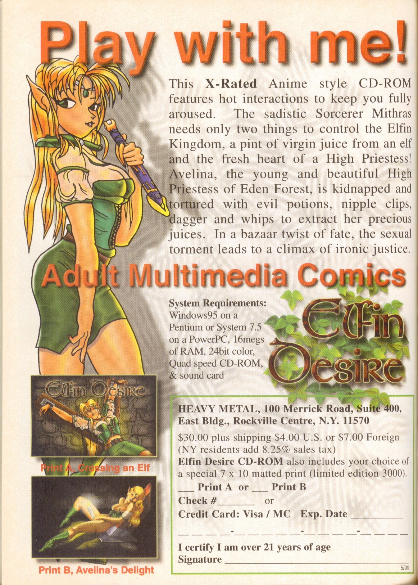

This is an amazing snapshot of the state of the art of erotic games circa the end of the last century. Back in the day when 16 MB of RAM, 24 bit color and/or a sound card were not universal.Â
I also enjoy the typo in the last sentence of the copy.
(Heavy Metal issue #187, May 2000 - Page 104 Elf Desire ad)
A pint of virgin juice ğŸº
I assure you that 16 MB was quite universal by 2000 op